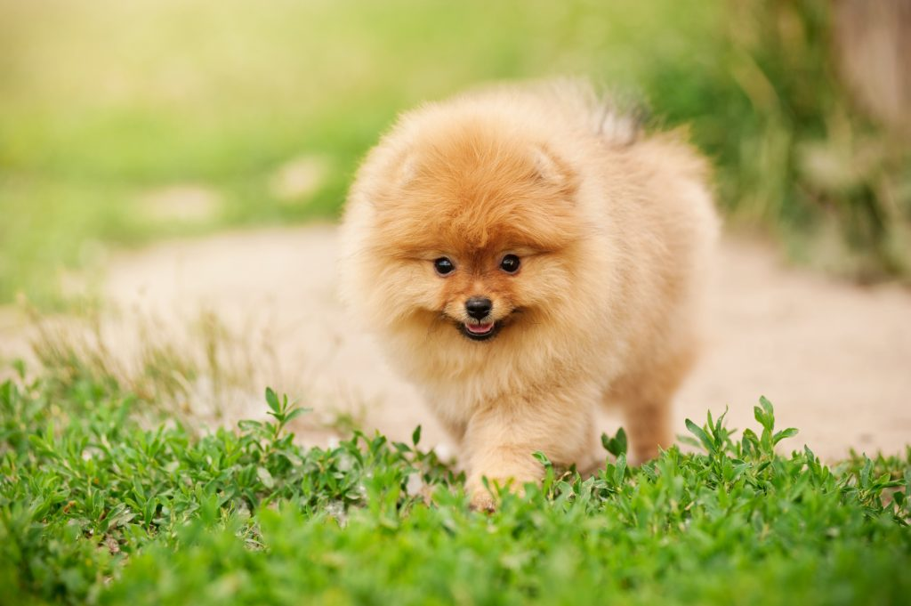

| דף ראשי | גזעים | מחלות | רקעים ותמונות | סקר | צרו קשר |
|---|
| קוקר ספאנייל |
| סמוייד |
| שפיץ יפני |
| פומרניאן |
| פודל |
| דני ענק |
| דלמטי |
| רועה גרמני |
| רועה קווקזי |
| רועה בלגי |
| בולדוג אמריקאי |
| בולדוג צרפתי |
| בולדוג אנגלי |
| צ'או צ'או |
| שיצ'ו |
| אמסטף |
| פינצ'ר |
| רוטווילר |
| דוברמן |
| האסקי סיבירי |
פומרניאן
מידע נוסף
כלבי העבודה היו גדולים מידי בשביל לשמור על הבית ולמעשה הם לא התאימו לחיים בבית. כשכלב גדול חי בבית, הסלון נמצא בסכנה מתמדת - הזנב עלול להפיל את הכוסות שעל השולחן וגם מסך הטלוויזיה יכול ליפול במשחק פרוע. גזע הכלבים פומרניאן פותח בשביל להיות כלב שמירה אבל עם גודל שמתאים לבית ואופי נעים שמתאים למשפחה.
פומרניאן - מקור הגזע והיסטוריה
כלבים אלו מגיעים אלינו ממחוז פומרניאן גרמניה של היום. הם פותחו מכלבי שפיץ - כלבי עבודה שכוללים גם את הגזעים המלמוט, האסקי והסמוייד. תפקידם העיקרי של פומרניאן היה כלבי לוויה וכלבי שמירה, אבל רק בבתים ובאחוזות של עשירי האזור. בהתחלה היה גודלם קצת יותר גדול אבל דרישה של בעלי כלבים לכלב קטן שיהיה מתאים גם לליווי בנסיעות הובילה את הצורך ליצירת כלב קטן יותר. פומרניאן הוא גזע כלבים עתיק מאוד ואזכורים ראשונים לגזע אפשר למצוא בשנת 1500 בכתבי היסטוריה, תמונות ועוד. הגזע הפך לפופולארי לאחר שהמלכה ויקטוריה אימצה פומרניאן, כלבים אלה הפכו להיות כלבי לוויה של אצילים ולאחר מכן הגיעו לפשוטי העם. היום גזע כלבים זה הוא אחד הפופולאריים בעולם והוא נמצא בין 20 הגזעים הפופולאריים בארצות הברית.
פומרניאן - נתונים ומאפיינים
פומרניאן שייך למשפחת כלבי שעשוע זעירים - הוא קטן אבל אף אחד לא יכול לפספס אותו.
מבנה גופם קטן ומרובע, הרגלים קצרות והזנב מסולסל כלפי מעלה.
הפרווה ארוכה ומלאה ונותנת לכלב מראה מנופח, צבע הפרווה שחור, חום ושילובים בין הצבעים.
משקל: 2-4 ק"ג
גובה:18-30 ס"מ
מחלות נפוצות וטיפול - כלב פומרניאן
כלבים קטנים סובלים מבעיות בעצמות בעיקר במפרקים וזה נובע מעומס משקל הגוף על רגליו הקטנות. פומרניאן גם סובל ממחלת העור השחור, מחלה זו גורמת לנשירת הפרווה ולאחר מכן העור מקבל צבע שחור. בקיץ פומרניאן סובלים מהחום וצריך לשמור על כמה כללים. לפני הקיץ צריך לספר את הכלבים, לדאוג לפינה קרירה ונעימה ולטייל בחוץ רק בשעות הערב והבוקר.
